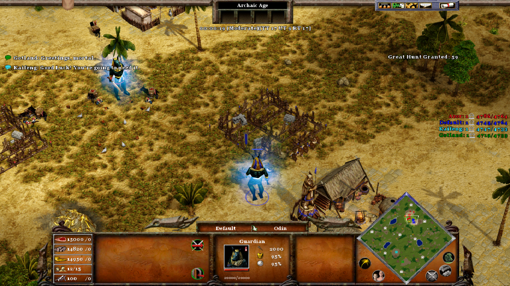
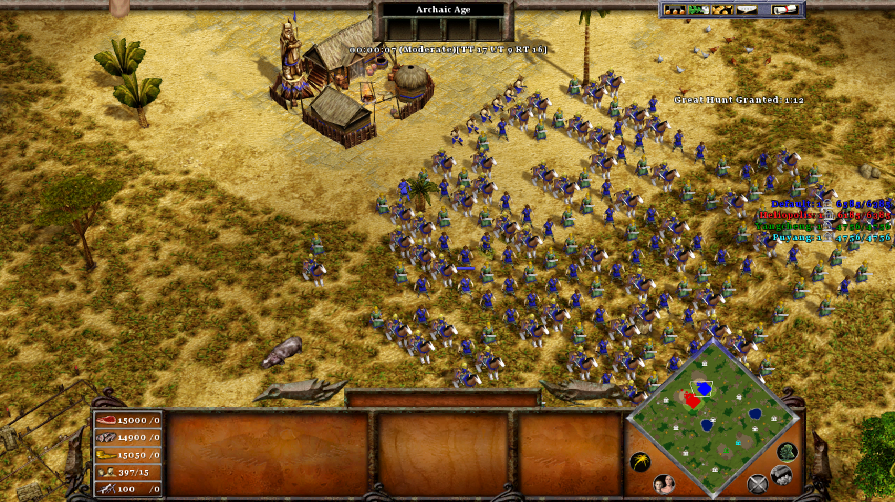

Arabian Desert: A large desert with hidden treasures and bandit camps and scarce wood.

Elysius Camps: A miraculous and brilliant land, with plenty of resources available, but you will have to fight for it.

Guardians' Valley: Each player starts with a Guardian in the Valley of the Kings.

Guardians' Megalopolis: Each player starts with a Guardian in a Savanna megalopolis.

One Settlement: All players start with one settlement and some small villages. But there are no other settlements available.

Ragnarock: A Battle Royale among the gods in a nordic apocalyptic World.

Sahara Desert: All resources are hard to be found on this map, especially wood.

Starting Army: Each player starts with a huge army.
